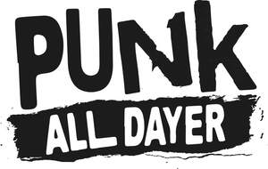

Trade Mark Journal No.2025/036 5 September 2025
UK00004252138 20 August 2025 (9,14,16,18,25,28,32,35,38,41,43)

- Class 9
- Recordings of sound or images; records, compact discs, mini discs, laser discs, digital video discs, digital audio recordings, audio cassettes, video cassettes; magnetic tape, computer software and firmware, computer multimedia products; magnetic and optical programmes bearing media; floppy discs, CD-ROM, interactive compact discs; computer games, video games, interactive games; computer software, sound or video recordings, or publications, in electronic form supplied on-line or from facilities provided on the Internet; digital music provided from the Internet; digital recordings of performing arts entertainment provided from the Internet; sound recordings and images downloadable from the Internet; Mobile telephones and telephone covers; sunglasses.
- Class 14
- Jewellery; watches; articles of jewellery made of precious metal; chains; chokers; neck torqs; bracelets; bangles; torq style wristwear; arm cuffs; shirtstuds; cufflinks; earrings; rings; brooches; ankle chains; body jewellery; earcuffs; noseclips; nosestuds; key rings; decorative jewellery belts comprised of jewellery pieces; tie slides; key rings; key fobs; badges; paste jewellery.
- Class 16
- Paper, cardboard; printed matter and printed publications; books, magazines, brochures and event programmes; posters; flyers; leaflets; prints; photographs; postcards; stationery; pens; tickets for concerts, shows and other events; decalcomanias; greetings cards; prints and framed prints; writing instruments; stickers; money clips.
- Class 18
- Leather and imitations of leather; luggage; bags including holdalls and handbags; cases including key cases; wallets and purses, credit card holders; hatboxes made of leather and imitation leather; umbrellas; parasols; rucksacks; travelling bags; belts, made of leather and imitation leather.
- Class 25
- Clothing articles; waterproof clothing; t-shirts; sweatshirts; sweatpants; sweaters; suits; singlets; vests; headscarves; shirts; blouses; gloves; stockings; dressing gowns; underwear; capes; shawls; jeans; children's clothing; pullovers; knitwear; jogging suits; anoraks; bomber jackets; jackets; wind-cheaters; overcoats; shorts; socks; rugby shirts; fleece tops; jumpers; belts; polo shirts; dresses; swimwear; cardigans; coats; trousers; mini-skirts; pinafores; waistcoats; overalls; dance clothing; leotards; leggings; scarves; ties; footwear; shoes; boots; trainers; sandals; espadrilles; headgear; caps and baseball caps; bandannas; hats; Cuffs.
- Class 28
- Toys; games; playthings; novelties; playing cards; gymnastic and sporting articles.
- Class 32
- Beers; mineral and aerated waters and other non-alcoholic drinks; non-alcoholic beers and wines; shandy; fruit drinks and fruit juices; syrups and other preparations for making beverages; Beers and non-alcoholic beverages.
- Class 35
- Advertising; marketing; promotion of performance art entertainment; Retail services and on-line retail services connected with CDs, DVDs, downloadable sound, music, image, video and games files, videos, audio books, computer games, video games, electronic games, jewellery, ornaments, clocks, watches, printed matter, bags, clothing, headgear, toys, games and sports equipment, food products; information and advisory services relating to all of the aforesaid.
- Class 38
- Broadcasting; radio and television broadcasting; radio station (broadcasting); digital broadcasting; internet streaming services; communication services; information and advisory services relating to all of the aforesaid.
- Class 41
- Education and entertainment services all related to music; Organizing and conducting music festivals for entertainment purposes; arranging, organising, presentation and provision of music events including concerts, competitions, sporting and cultural activities, live performances, exhibitions, seminars, conferences and shows; provision of recreational and entertainment facilities; club entertainment services; night club services and organising night club events; information and advisory services relating to all of the aforesaid.
- Class 43
- Services for providing food and drink; temporary accommodation; services for the provision of camp ground facilities; hire of marquees; mobile catering services; outside catering; campground facilities (provision of-) for caravans; rental of tents; campground facilities (provision of-) for tents; bar and restaurant services; cafe and cafeteria services; information and advisory services relating to all of the aforesaid.
DF Concerts Limited
Representative: Fieldfisher LLP